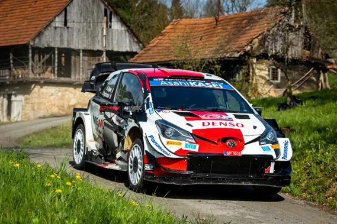
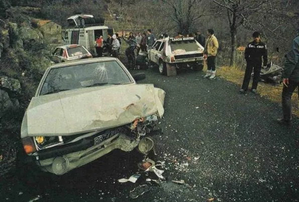
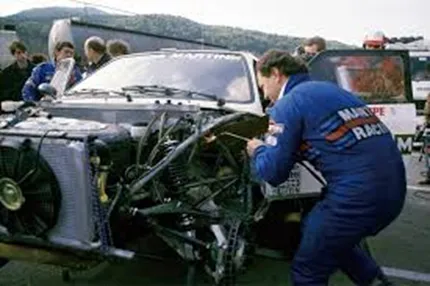
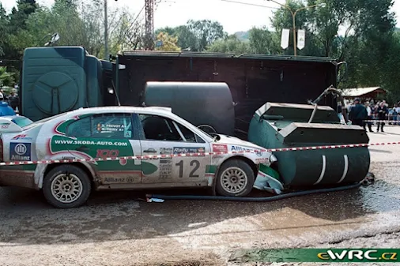
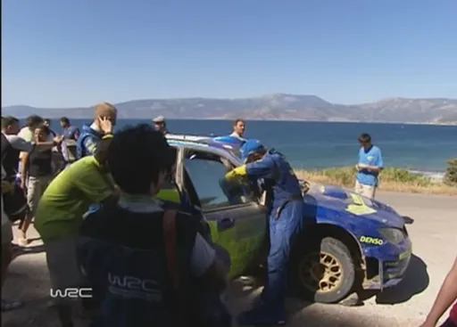
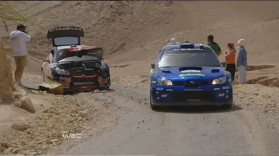
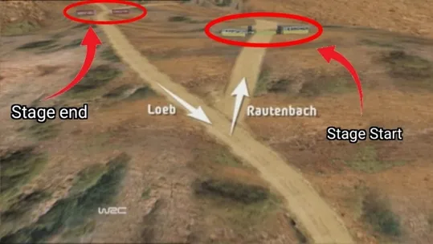
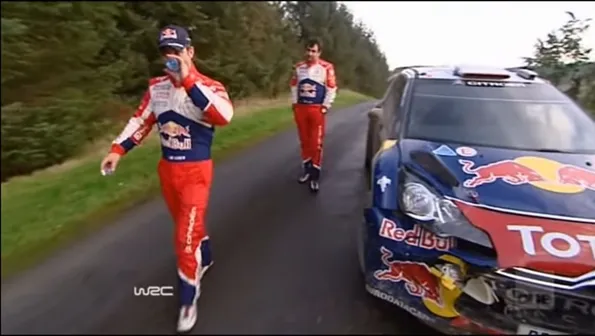
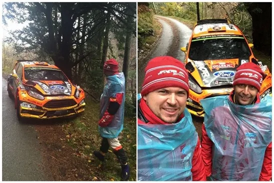
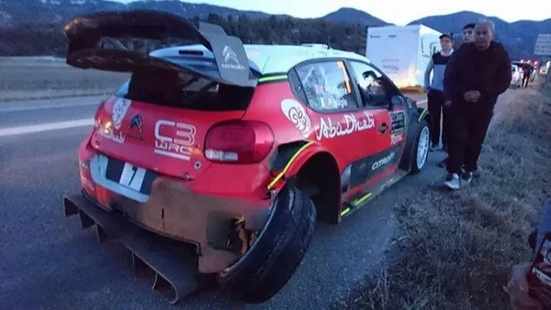

7 times WRC drivers had accidents in a Road Section
The first edition of Rally Croatia saw the rare occurrence of a rally car colliding with a civilian car in a road section when coming up to a stage. Sebastien Ogier crashed with another car on the way to Stage 17 on the final day badly damaging the side of his car. Despite this the Frenchman won the rally after an incredible performance on the power stage, beating teammate Elfyn Evans by .6 of a second.
Sebastien Ogier’s Toyota Yaris. The damage is visible on the left of the car
So we decided to give you 7 more instances of when a rally car had an accident on a road section, either with another car or a fellow competitor.
1. Henri Toivonen Rally Monte Carlo 1986

Henri Toivonen was leading Rally Monte Carlo by over 1 minute and 40s over Walter Rohrl, in the Lancia Delta S4’s first outing on tarmac. On the road section between SS12 and 13 though, the Lancia driver collided with a spectator car head on. The car lost a wheel, and the chassis was badly damaged. The Lancia mechanics managed to get the car fixed enough so that Toivonen could get to the next time control, but it took them atleast 5 service points to get the car fully fixed as the chassis was so badly damaged that the left wheelbase was shorter than on the right. The Finn described the car as a banana car and that he had to drive the car like it was on gravel, coming in to corners sideways. On stage 22, the mechanics ran out of time after fixing the car and couldn’t change tyres with Toivonen having to do the next stage on studs. The Finn got a puncture on the dry tarmac and lost the lead to Timo Salonen in the Peugeot 205 T16.

Lancia mechanics fixing the Delta S4
Toivonen pushed like hell for the rest of the rally and eventually won Monte by 4 minutes over Salonen. It is interesting to mention that Tony Pond also retired on a road section after a collision with another car, on the same rally Toivonen had his crash. Sadly for Toivonen, he would lose his life in Corsica the same year along with his co-driver Sergio Cresto. The world of rallying robbed of a great talent and a future champion. He was only 29 years old.
2. The Entire Skoda Team – Rally Argentina 2001

Things were heating up in Argentina 2001. Not because there was a battle for the lead, Colin McRae was leading the rally by over 40 seconds, but because a spectator BBQ had gone a bit wrong and started a fire which engulfed 20 cars into the flames. A fire truck was sent to the scene but it took a corner way too fast and tipped over. The truck rolled on its side into both Skoda Octavias of Bruno Thiry and Armin Schwarz and also injured team manager Jens Pohlmann, who suffered broken ribs. Both cars were badly damaged, and the entire team withdrew from the event. There is no point in me explaining anything else. This has to be one of the more absurd ways someone has retired in a rally.
Link to the video of the incident here (32:00)
3. Petter Solberg – Rally Acropolis 2006

2006 was a horrible year for Petter and Subaru. The Japanese manufacturer failed to win a rally for the first time since 1992, scoring just four podiums (all courtesy of Petter). Worse yet the 2006 car proved uncompetitive, with the team finishing third in the standings 99 points off eventual champions Ford. Solberg was beaten in the standings by rookie Dani Sordo and privateer Manfred Stohl, With Chris Atkinson equal in points with Toni Gardemeister who only did 4 rallies (Atkinson did do a full season albeit not always in the factory car as Stephane Sarrazin took the car on tarmac rounds). In Greece Solberg was running third heading into the final stage of Day 2. On the road section Petter saw a car heading in the opposite direction and swerved to avoid it, hitting a roadside rock and breaking his steering. He would super rally and finish the rally in 7th. Without the five-minute penalty the Norwegian had for missing that one stage, he would have been in second, as Sebastien Loeb suffered a puncture on stage 13 and last well over a minute to eventual winner Marcus Gronholm.
You can see more here (32:00)
4. Sebastien Loeb and Conrad Rautenbach – Jordan 2008

This is our first instance of two rally cars crashing with each other. The first ever Rally Jordan in 2008 was eventful. Road cleaning and a bad setup left Sebastien Loeb in 5th after the first pass of day 1’s stages. The Frenchman fought back and moved into the lead on the first stage of Day 2. It was all in vain though as after the end of stage 11 the Citroen driver collided with Conrad Rautenbach. The way back after the end of the stage and the way into the stage were the same road. So as Rautenbach was warming his tyres and going a bit fast he collided with the rally leader. The front of Loeb’s car was heavily damaged, and the radiator was broken so his rally was over.

Graph explaining how the 2 collided.
As for Conrad Rautenbach, who already super rallied on Day 1, he would also not go any further. Retiring then and there
Link of the crash and more analysis on how it happened here (28:27)
5. Sebastien Loeb – Wales Rally GB 2011

The 2011 season finale was a thriller as Sebastien Loeb was leading the championship by 6 points over Mikko Hirvonen. This was a must win rally for the Finn, who was chasing his first championship. On stage 6 Hirvonen took the lead from his rival Loeb and was leading the rally by a slim margin of .4 of a second. Unfortunately, the M-Sport driver was pushing too hard and spun on the next stage, with a tree branch poking a hole in the radiator, which in turn terminally damaged his engine. What makes this championship loss more devastating to the Finn, compared to 2009 is that in the end it was all for nothing. A bizarre accident in the road section on the final day meant that Hirvonen needn’t have pushed this much. Sebastien Loeb who was in 2nd behind Jari Matti Latvala, retired after a Spanish fan who forgot he was in the UK drove on the wrong side of the road and collided head on with the Frenchman.
6. Martin Prokop and Hayden Paddon – Wales Rally GB

Another crash between two WRC drivers. Heading in stage 12, Hyundai driver Hayden Paddon took a wrong turn and Martin Prokop who was behind him followed suite. The Kiwi realised his mistake and did a U-turn to go back to the right route. Unfortunately he didn't see Prokop’s Fiesta, and the two collided. Paddon’s i20 only suffered cosmetic damage, but Prokop had to retire, as the crash broke the Czech’s radiator. Prokop and co-driver Jan Tomanek had to wait in the rain for 5 hours, as they couldn’t reach their team in the service park due to poor phone signal. Paddon would finish the rally in 5th place, 3 minutes off eventual winner Sebastien Ogier and 9 seconds off teammate Dani Sordo 4th.
7. Kris Meeke – Rally Monte Carlo 2017

Rallye Monte Carlo 2017 marked the start of a new era for the WRC. Unfortunately it wouldn't be an ideal debut for Kris Meeke and Citroen. Both C3 WRCs where out of the rally by stage 4, with Stephane Lefebvre crashing on the first stage of the rally and team leader Kris Meeke crashing out from 2nd. Things would somehow get worse for the Northern Irishman. Heading into the first stage of Sunday he was hit by a civilian car. The accident broke the rear right suspension of his C3, meaning his rally was over. Citroen would leave Monte Carlo with only two points as Stephane Lefebvre managed to somewhat recover and finish 9th. This would be a sign of things to come for Citroen and Meeke as the pair would not enjoy the amount of success they had before the 2017 season. Meeke was eventually let go by Citroen mid-way through 2018, with the French manufacturer leaving the sport altogether after 2019.
Are there any other crashes we missed ? Let us know in the comments.
By Dimitris Theodorou


Comments